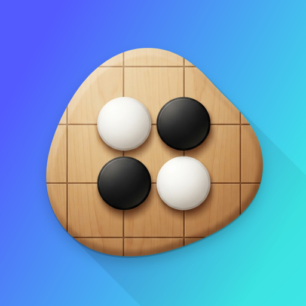
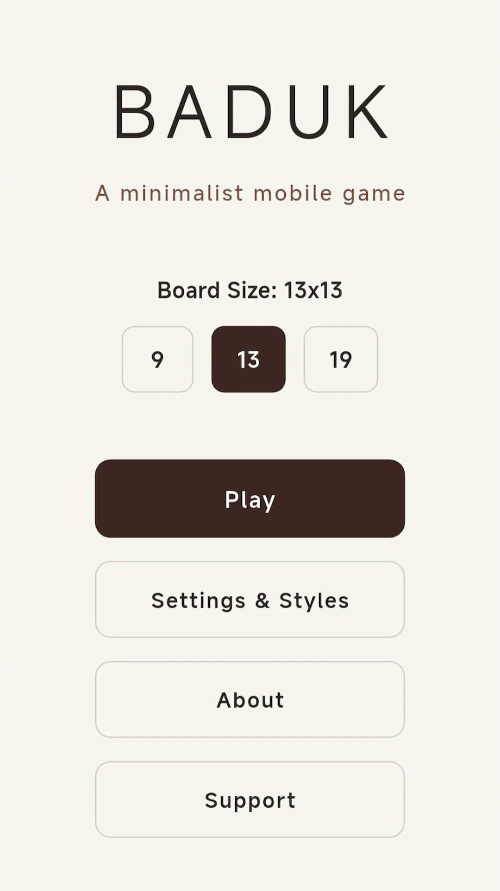
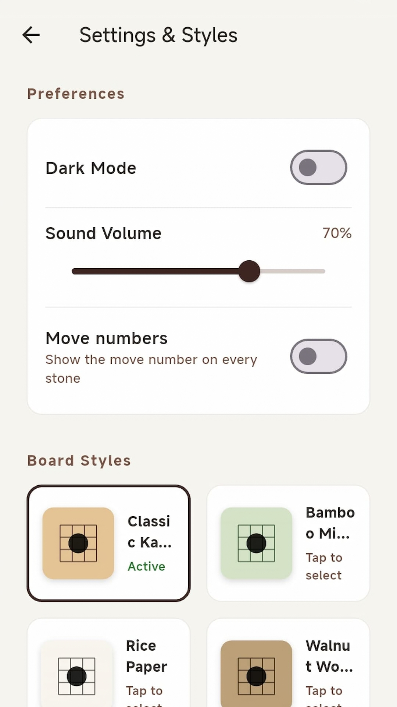
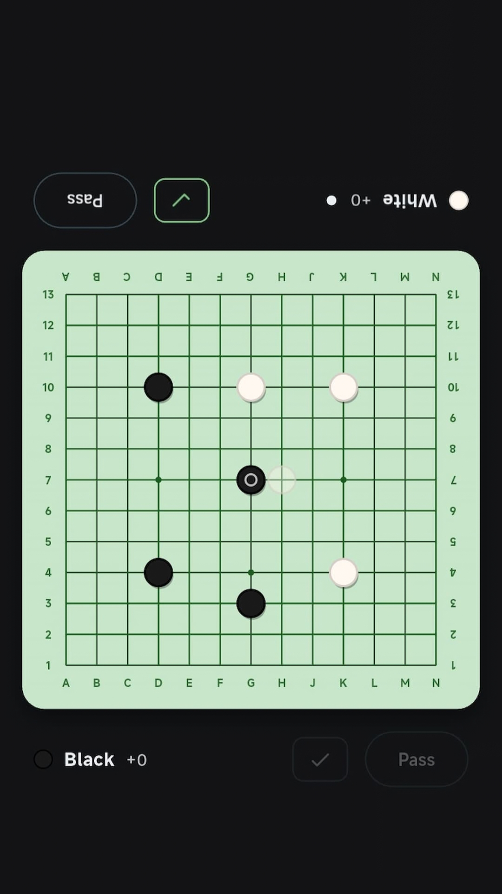
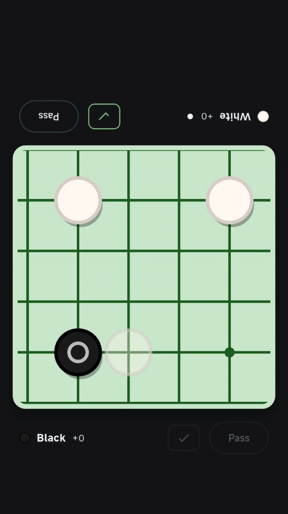
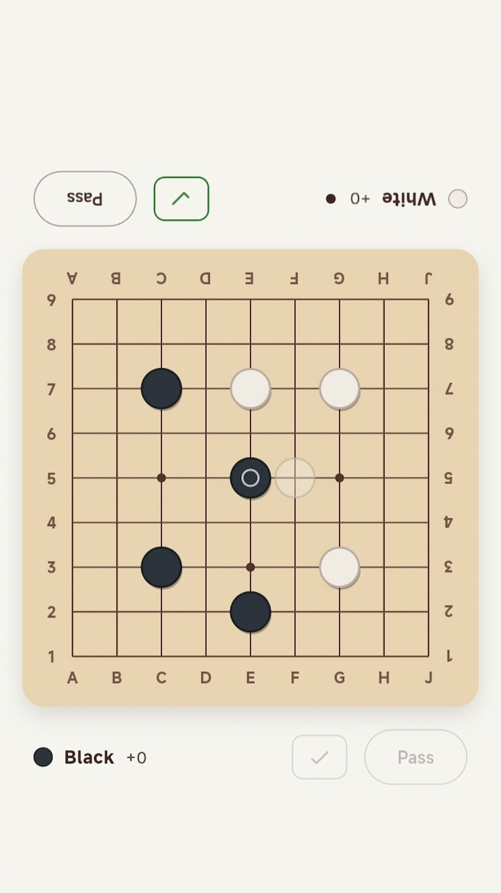
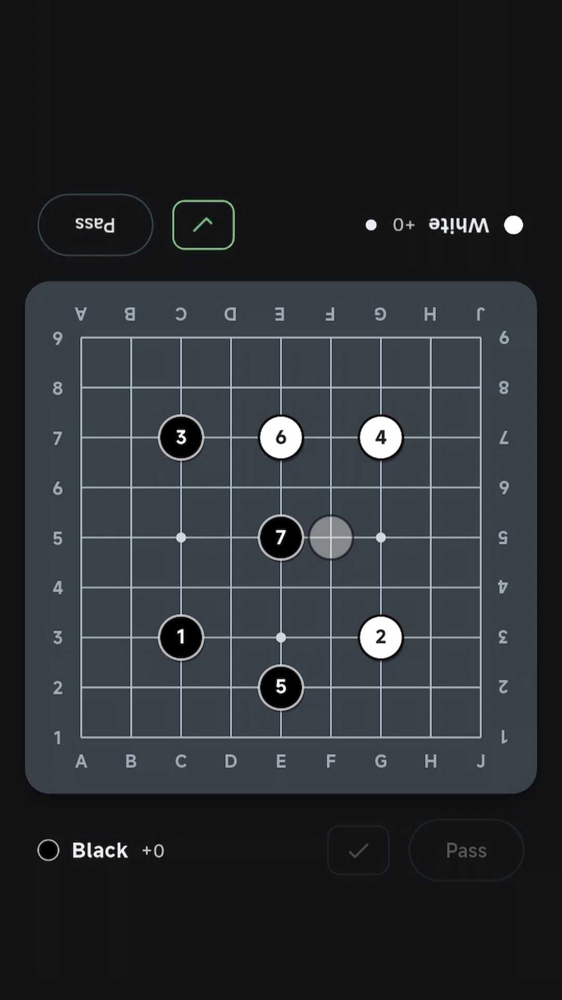

Board sizes
Play on 9×9, 13×13, or 19×19 — from quick games to full-board matches.

Minimalist Baduk
A clean, distraction-free Go experience for two players on one device. Focus on the stones — everything else stays out of the way.
Simple app designed to make playing, reviewing and managing Go games feel natural.
Play on 9×9, 13×13, or 19×19 — from quick games to full-board matches.
Tap an intersection to preview a ghost stone, then confirm with the check button. Avoid mis-taps on denser boards.
Zoom and pan only the board for precise placement. Double-tap or ease out to return smoothly to the full view.
After two consecutive passes, mark dead groups, see territory, and get a Japanese-style score with komi.
Save games as SGF or load existing records. Review with playback, speed control, and step-by-step navigation.
Several board woods and stone styles, plus light and dark mode. Preferences are saved across sessions.
Coordinates are oriented for both sides of the table so Black and White can read the board comfortably.
Soft placement and capture sounds with adjustable volume — quiet enough to stay focused.
A look at BadukDroid in action.






Download BadukDroid from Google Play and play Go whenever you have a friend nearby.
Google Play